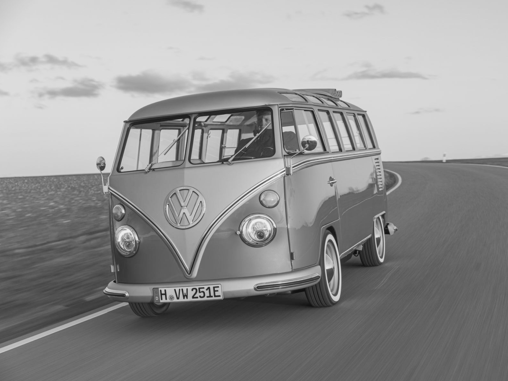
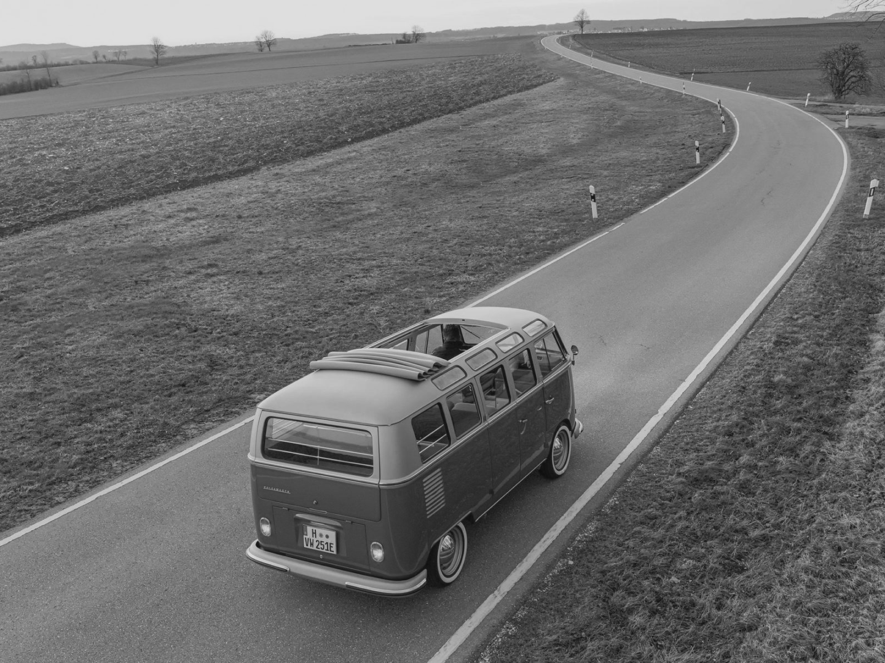
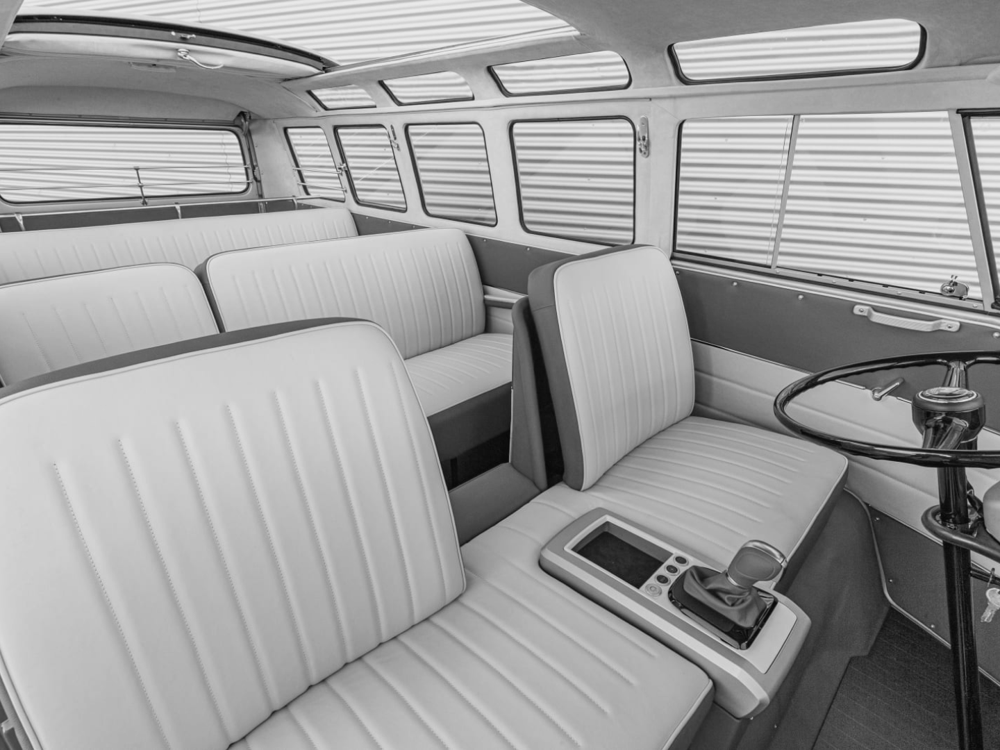
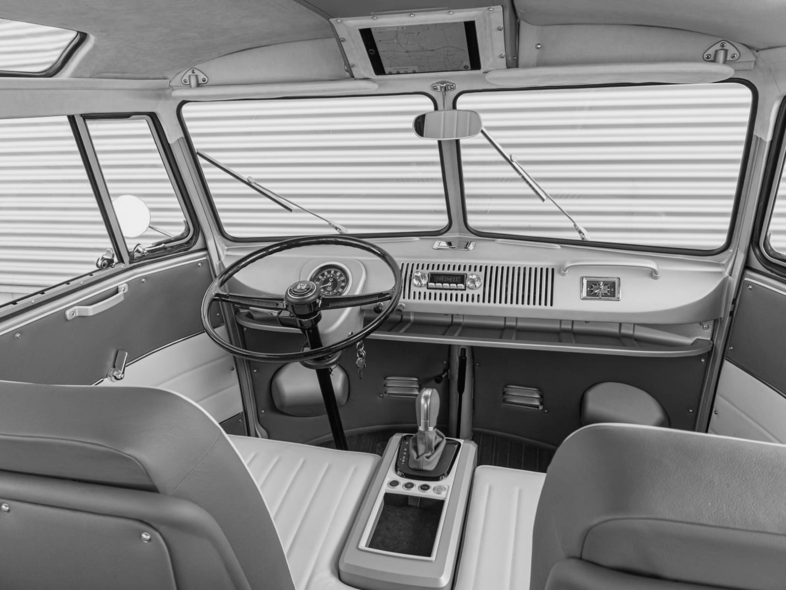

volkswagen T1
Новая версия популярного микроавтобуса
С ЭЛЕКТРО ДВИГАТЕЛЕМ
VW T1 Electro: Отделение Volkswagen Commercial Vehicles представило концепт e-Bulli: классический вэн T1 1966 года с электрической силовой установкой. По словам производителя, проект получит коммерческое продолжение, и через фирму-партнера eClassics наборы для конверсии микроавтобусов в электрокары и уже готовые машины будут продавать частным клиентам.
ПЛЮСЫ
- Экологичный
- Экономный
- Тихий
МИНУСЫ
- Дорогой
- Подзарядка


